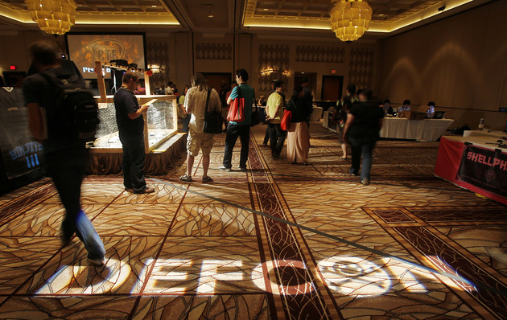

<!DOCTYPE html>
<html lang="en">

<head>
    <meta charset="UTF-8" />
    <title>title</title>
    <script src="https://unpkg.com/react@18/umd/react.development.js"></script>
    <script src="https://unpkg.com/react-dom@18/umd/react-dom.development.js"></script>

    <!-- Don't use this in production: -->
    <script src="https://unpkg.com/@babel/standalone/babel.min.js"></script>
    <link rel="stylesheet" href="./assets/css/style.css" />
</head>

<body>
    <div id='blog'></div>
    <script type='text/babel'>

        function Blog() {
            return (
                <>
                    <article class='blog-post'>
                        </img>
                        <div class='blog'>
                            <h3>Hacker Culture</h3>
                            <h4>topics: clothing, music, conventions</h4>
                            <h5>by Tyler Huff</h5>
                            <br></br>
                            <p>So a little bit about me, I have about 5 years of software development experience with some knowledge about html, javascript, C#, swift, and of course python. This blog is written with React JavaScript. The developer culture is very rich in its own right and there are lots of conventions specific to most of the languages and libraries. I attended quite a few of the remote ones during COVID. I got tons of swag that I still have from Linode. As a developer I heard about Defcon quite often in my career and amongst colleagues and had considered going but life (ex-wife) usually got in the way at that point in my life. I, like most people, love hacker movies and series that are on all of the streaming platforms. People even have a specific stereotype for hackers. You know the look, dark hoodie over their head, backpack and laptop. I've always been fascinated how much something so simple like a movie or genre of music (punk rock) can influence a population. I've always been on the fringe of pop culture and haven't really embraced a lot of the current or previous trends but I think the hacker culture is more of an umbrella term for so much. You get most of the misfits in this category but there are a lot of people that have made it very mainstream and have tried to even teach people about the risks associated with their online presence (Darknet Diaries). I am excited to join this amazing community. 
                            </p>
                            <br></br>
                            <div>image credits: 
                                <a target='_blank' href='https://www.politico.com/news/2023/08/12/u-s-officials-def-con-hacking-conference-00110946'>https://www.politico.com/news/2023/08/12/u-s-officials-def-con-hacking-conference-00110946</a>
                            </div>
                            <div>references: 
                                <a target='_blank' href='https://defcon.org'>https://defcon.org</a>
                                <br></br>
                                <a target='_blank' href='https://darknetdiaries.com'>https://darknetdiaries.com</a>
                            </div>
                        </div>
                    </article>
                </>
            )
        }
        const container = document.getElementById('blog');
        const root = ReactDOM.createRoot(container);
        root.render(<Blog />);
    </script>
</body>